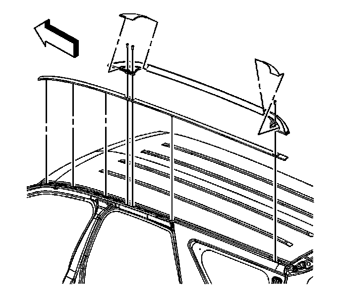

Luggage Carrier Replacement
Luggage Carrier Replacement
Removal Procedure

1. Using a flat-bladed tool, carefully remove the finish covers from the luggage carrier side rails.
2. Remove the bolts that retain the side rails to the roof panel.
3. Remove the side rails from the roof panel.
4. Remove the compression gaskets from the roof panel. Discard the gaskets.
Installation Procedure
1. Install new compression gaskets to the roof panel.
Important: Install the new gaskets prior to installing the side rails.
2. Position the side rails to the roof panel compression gaskets.
Notice: Refer to Fastener Notice (Fastener Notice) .
3. Install the bolts which retain the side rails to the roof panel.
Tighten the bolts to 9 N.m (79 lb in).
4. Install and secure the finish covers to the side rails.